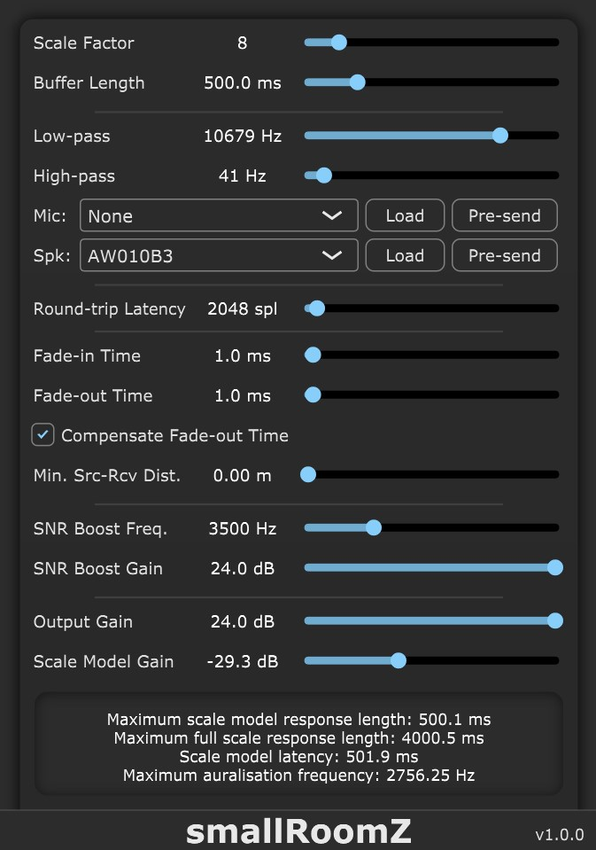

Real-time auralisation of scale models
I am sitting in a small room...
smallRoomZ aims to help make working with scale models for real-time auralisation accessible to acousticians and engineers working in DAW environments. smallRoomZ enables the user to make changes to the scale model and hear the changes to the acoustics in real-time, providing instant feedback on the influence of a change of materials or positioning. The plugin allows two sources to be played simultaneously. It also allows recording with two microphones, allowing for binaural rendering through the use of a scale model dummy head. The processing includes several useful DSP tools to improve the quality of the rendering, such as custom correction filters for the speakers and microphones used.
Download files and follow instructions according to your architecture:
License: The smallRoomZ plugin is released under the CC BY 4.0 license.
Credits:
smallRoomZ was developed with funding from the European Union’s Joint Programming Initiative on Cultural Heritage project PHE (The Past Has Ears).
The smallRoomZ plugin was developed by Peter Stitt and the project is supervised by Brian F.G. Katz.